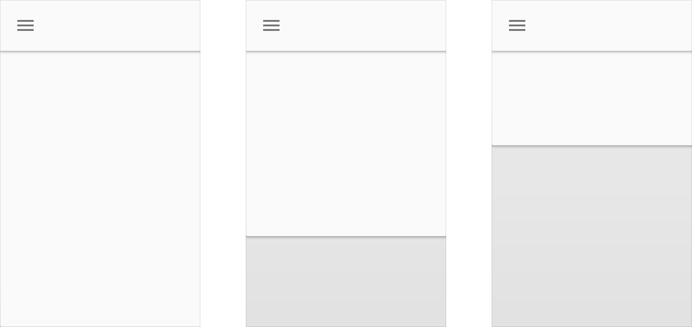
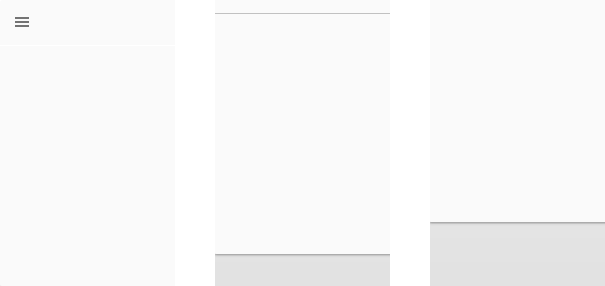
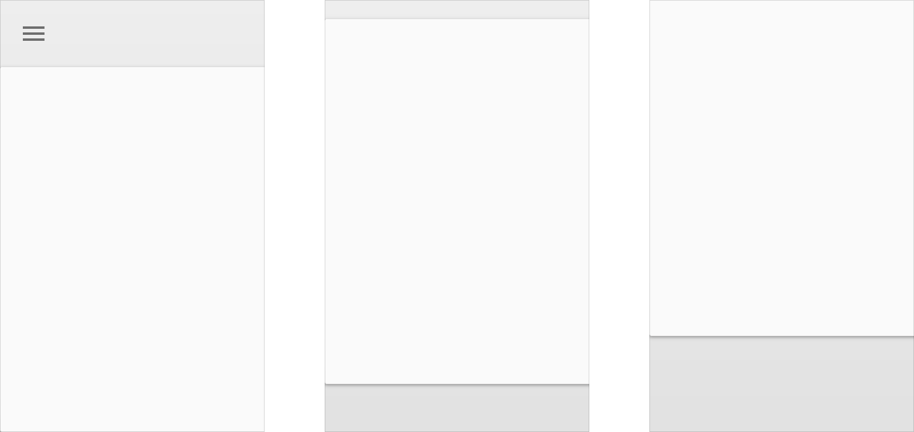
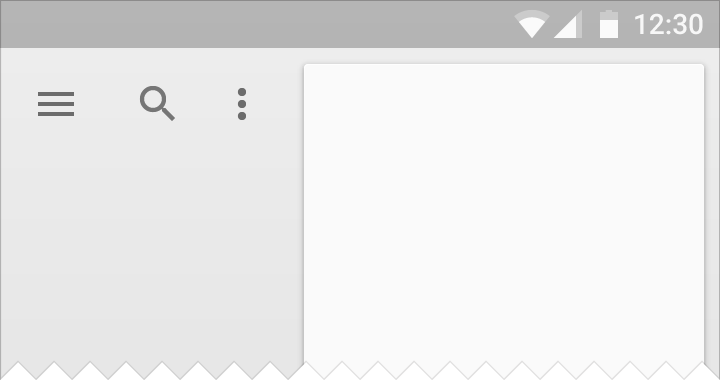
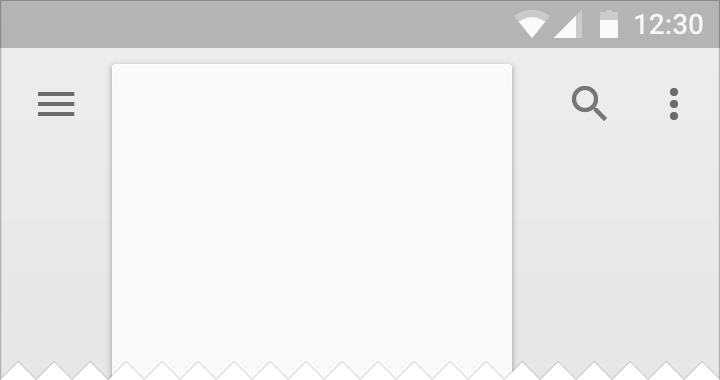
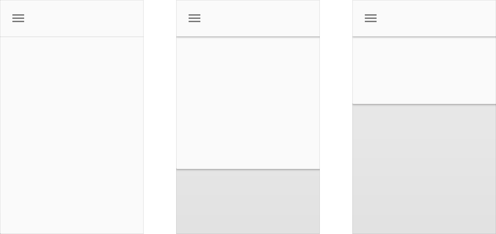

툴바는 그 액션에 영향을 받는 페이퍼의 시트에 한 계단 위에 보여집니다. 시트가 툴바 아래로 스크롤 할 때, 이것은 고정되며 반대쪽으로 지나갈 수 없습니다.

툴바는 다른 시트에 한 계단 위에 위치합니다.
시트는 또한 화면 밖으로 이동함으로 인해서 그 툴바를 가릴 수 있습니다.

툴바는 화면 밖으로 이동할 때까지 그 층에 유지합니다.
마지막으로, 두 번째 시트는 이동으로 인해서 그 툴바를 가릴 수 있습니다.

두 번째 시트는 이동으로 인해 그 툴바를 가립니다.
툴바의 좌측과 우측의 액션은 메뉴나 다이얼로그와 같은 임시적인 머티리얼 외에는 머티리얼의 다른 시트에 의해 결코 나뉘어지지 않습니다.
대신에, 툴바는 툴바를 무시하는 페이퍼의 시트를 위한 공간을 위해 툴바의 너비를 제한할 수 있습니다. 좌측과 우측의 액션은 툴바의 같은 쪽에 모아 놓습니다.

Do.
머티리얼의 전체 길이 미만으로 너비를 제한하십시오.

Don't.
결코 머티리얼의 또 다른 지속된 시트에 의해 나뉘어지는 머티리얼 시트를 허용하지 마십시오.
툴바는 다른 시트와 함께 한 층을 공유할 수 있습니다.
툴바가 한 계단으로 변형시키는 한 층을 공유하는 경우를 가리켜 폭포(Waterfall)라고 부릅니다.

고정(Clipping)의 폭포 변종(Waterfall Variant)에서, 툴바는 주름진 것으로 시작하며, 그리고 나서 한 계단을 형성하기 위해 들어 올립니다.